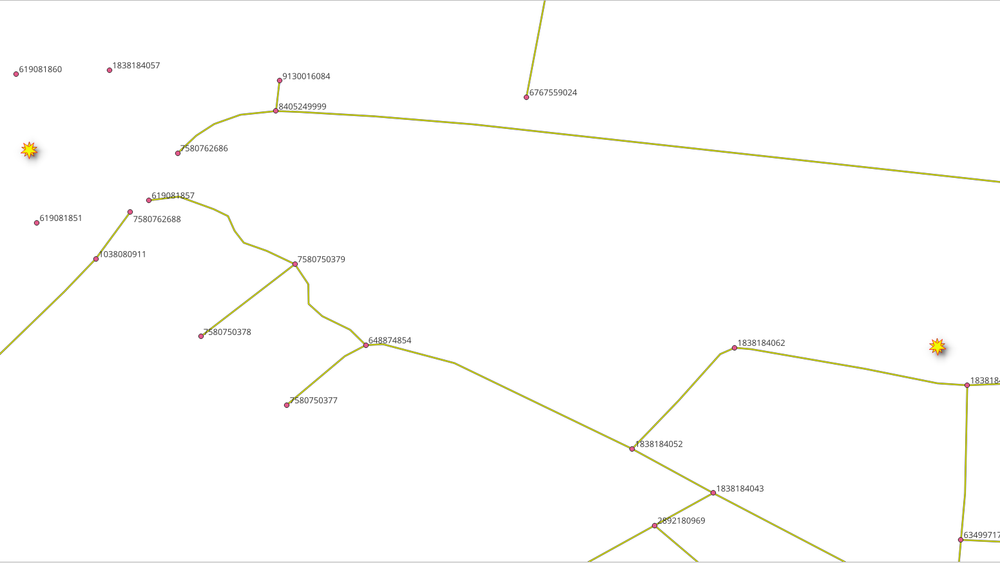
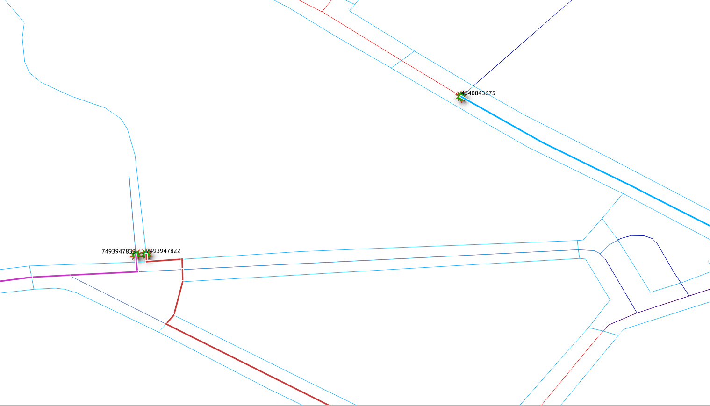

6. pl/pgsql function¶

Other kind of functions are pl/pgsql. As the applications requirements become more complex, using wrappers of previously defined functions becomes necessary for clarity.
6.1. Requirements for routing from A to B¶
Chapter problem:
Create a function
wrk_fromAtoBthat allows routing from 2 geometries.The function takes latitude/longitude points as input parameters.
Returns a route that includes a geometry so that if can be displayed, for example, in QGIS.
Will also return some other attributes.
The detailed description:
Input parameters
Parameter |
type |
Description |
|---|---|---|
|
REGCLASS |
Edge table name identifier. |
|
NUMERIC |
The latitude of the departure point. |
|
NUMERIC |
The longitude of the departure point. |
|
NUMERIC |
The latitude of the destination point. |
|
NUMERIC |
The longitude of the destination point. |
|
BOOLEAN |
Flag to create a |
Output columns
Column |
Description |
|---|---|
|
For ordering purposes. |
|
The edge identifier that can be used to JOIN the results to the |
|
The street name. |
|
Between start and end node of an edge. |
|
In meters. |
|
Minutes taken to traverse the segment. |
|
The road geometry with corrected directionality. |
For this chapter, the following points will be used for testing.
(lat,lon) = (-36.8471438, 174.7710042)
(lat,lon) = (-36.8524328, 174.766749)
6.2. The Vertices Table¶
Graphs have a set of edges and a set of vertices associated to it. The views need their vertices table.
6.2.1. Exercise 1: Create vertices table¶
Problem
Create a vertices table for the views:
vehicle_nettaxi_netwalk_net
Solution
Use
pgr_extractVertices(explained in Graphs) to create the vertices tableJOINthe vertices table withways_vertices(created in Graphs) to get thex,y,geominformation.
For vehicle_net:
SELECT * INTO vehicle_net_vertices
FROM pgr_extractVertices(
'SELECT id, source, target
FROM vehicle_net ORDER BY id');
UPDATE vehicle_net_vertices AS v
SET (x,y,geom) = (w.x, w.y, w.geom)
FROM ways_vertices AS w WHERE v.id = w.id;
For taxi_net:
SELECT * INTO taxi_net_vertices
FROM pgr_extractVertices(
'SELECT id, source, target
FROM taxi_net ORDER BY id');
UPDATE taxi_net_vertices AS v
SET (x,y,geom) = (w.x, w.y, w.geom)
FROM ways_vertices AS w WHERE v.id = w.id;
For walk_net:
Modify the above queries to create the walk_net_vertices table.
SELECT * INTO walk_net_vertices
FROM pgr_extractVertices(
'SELECT id, source, target
FROM walk_net ORDER BY id');
UPDATE walk_net_vertices AS v
SET (x,y,geom) = (w.x, w.y, w.geom)
FROM ways_vertices AS w WHERE v.id = w.id;
6.2.2. Exercise 3: Nearest Vertex¶
Problem
Calculate the (OSM) identifier of the nearest vertex to a point.
In particular use the following (lat, lon) value: (-36.8471438, 174.7710042).
calculate the nearest OSM identifier of the vertex to:
ways_verticesvehicle_net_verticestaxi_net_verticeswalk_net_vertices
Solution
Remember that the
idhas an OSM vertex identifier on the vertices tables.Using the Postgis distance operator <-> to order by distance.
Get only the first row, to obtain the nearest identifier of the vertex.
For ways_vertices:
SELECT id
FROM ways_vertices
ORDER BY geom <-> ST_SetSRID(ST_Point(174.7710042, -36.8471438), 4326)
LIMIT 1;
For vehicle_net_vertices:
Modify the previous query.
1SELECT id
2FROM vehicle_net_vertices
3ORDER BY geom <-> ST_SetSRID(ST_Point(174.7710042, -36.8471438), 4326)
4LIMIT 1;
id
------
1269
(1 row)
For taxi_net_vertices:
Modify the previous query.
id
------
1989
(1 row)
For walk_net_vertices:
Modify the previous query.
id
-------
12292
(1 row)
6.2.3. Exercise 4: Nearest vertex function¶
Problem
When operations look similar for different tables, a function can be created.
Create a function that calculates the OSM identifier of the nearest vertex to a point.
Function name:
wrk_nearest.Needs to work only for the final application views and table.
The input parameters:
Column |
type |
Description |
|---|---|---|
vertex_table |
REGCLASS |
Table name identifier. |
lat |
NUMERIC |
The latitude of a point. |
lon |
NUMERIC |
The longitude of a point. |
The output:
type |
Description |
|---|---|
BIGINT |
the OSM identifier that is nearest to (lat,lon). |
Solution
The function returns only one
BIGINTvalue.Using format to build the query.
The structure of the query is similar to Exercise 3: Nearest Vertex solutions.
%1$Ifor the table name identifier.%2$sand%3$sfor the latitude and longitude.The point is formed with (lon/lat)
(%3$s, %2$s).
CREATE OR REPLACE FUNCTION wrk_Nearest(
IN vertex_table REGCLASS,
IN lat NUMERIC,
IN lon NUMERIC)
RETURNS BIGINT AS
$BODY$
DECLARE result BIGINT;
BEGIN
EXECUTE format(
$$
SELECT id
FROM %1$I
ORDER BY geom <-> ST_SetSRID(ST_Point(%3$s, %2$s), 4326)
LIMIT 1
$$,
vertex_table, lat, lon)
INTO result;
RETURN result;
END
$BODY$
LANGUAGE 'plpgsql';
6.2.4. Exercise 5: Test nearest vertex function¶


{kind=link}

Problem
Test the
wrk_Nearestfunction.
Use the following (lat,lon) values: (-36.8471438, 174.7710042).
The point is the same as in Exercise 3: Nearest Vertex problem.
Verify the results are the same.
calculate the nearest OSM identifier of the vertex to:
ways_verticesvehicle_net_verticestaxi_net_verticeswalk_net_vertices
Solution
For ways_vertices:
Use the function with
ways_verticesas thevertex_tableparameter.Pass the (lat,lon) values as second and third parameters.
Using the function on the original data does not return the OSM identifier.
The value stored in
idcolumn is not the OSM identifier.
SELECT wrk_Nearest('ways_vertices', -36.8471438, 174.7710042);
For vehicles_net_vertices:
Modify the previous query.
SELECT wrk_Nearest('vehicle_net_vertices', -36.8471438, 174.7710042);
wrk_nearest
-------------
1269
(1 row)
For taxi_net_vertices:
Modify the previous query.
wrk_nearest
-------------
1989
(1 row)
For walk_net_vertices:
wrk_nearest
-------------
12292
(1 row)
6.3. wrk_fromAtoB function¶
In this section, creation and testing the required function will be tackled.
6.3.1. Exercise 6: Creating the main function¶
Problem
Create the function
wrk_fromAtoB.Follow the description given at Requirements for routing from A to B.
Use specialized functions:
wrk_NearestOSMcreated on Exercise 4: Nearest vertex function.It receives the point in natural language format.
Obtains the OSM identifier needed by
wrk_dijkstra.
wrk_dijkstracreated in SQL function
Solution
The function’s signature:
The input parameters highlighted.
The output columns are not highlighted.
The function returns a set of values.
CREATE OR REPLACE FUNCTION wrk_fromAtoB(
IN edges_subset REGCLASS,
IN lat1 NUMERIC, IN lon1 NUMERIC,
IN lat2 NUMERIC, IN lon2 NUMERIC,
IN do_debug BOOLEAN DEFAULT false,
OUT seq INTEGER,
OUT id BIGINT,
OUT seconds FLOAT,
OUT name TEXT,
OUT length_m FLOAT,
OUT route_readable TEXT,
OUT route_geom geometry,
OUT azimuth FLOAT
)
RETURNS SETOF record AS
The function’s body:
Call to the function wrk_dijkstra
Using PostgreSQL
formatto make substitutionsThe first parameter is the string to be replaced
The rest are the data parameters, are the strings use for replacement.
wrk_dijkstraobtains the values for the outputThe
edges_subsetvalue will replace%1$I:For the
sourceandtarget:wrk_Nearestis used to find the identifier.The vertices table name is formed with
%1$I_vertices.
lat1,lon1values will replace%2$s, %3$srespectively.lat2,lon2values will replace%4$s, %5$srespectively.
To get the constructed query in form of a warning:
The
WARNINGwill be issued only whendo_debugis true.No output will be generated.
$BODY$
DECLARE
final_query TEXT;
BEGIN
final_query := format(
$$
SELECT *
FROM wrk_dijkstra(
'%1$I',
(SELECT wrk_Nearest('%1$I_vertices', %2$s, %3$s)),
(SELECT wrk_Nearest('%1$I_vertices', %4$s, %5$s))
)
$$,
-- Subtitutions on the query are in order
edges_subset, lat1, lon1, lat2, lon2);
IF do_debug THEN
RAISE NOTICE '%', final_query;
RETURN;
END IF;
RETURN QUERY EXECUTE final_query;
END;
$BODY$
LANGUAGE 'plpgsql';
CREATE OR REPLACE FUNCTION wrk_fromAtoB(
IN edges_subset REGCLASS,
IN lat1 NUMERIC, IN lon1 NUMERIC,
IN lat2 NUMERIC, IN lon2 NUMERIC,
IN do_debug BOOLEAN DEFAULT false,
OUT seq INTEGER,
OUT id BIGINT,
OUT seconds FLOAT,
OUT name TEXT,
OUT length_m FLOAT,
OUT route_readable TEXT,
OUT route_geom geometry,
OUT azimuth FLOAT
)
RETURNS SETOF record AS
-- signature ends
$BODY$
DECLARE
final_query TEXT;
BEGIN
final_query := format(
$$
SELECT *
FROM wrk_dijkstra(
'%1$I',
(SELECT wrk_Nearest('%1$I_vertices', %2$s, %3$s)),
(SELECT wrk_Nearest('%1$I_vertices', %4$s, %5$s))
)
$$,
-- Subtitutions on the query are in order
edges_subset, lat1, lon1, lat2, lon2);
IF do_debug THEN
RAISE NOTICE '%', final_query;
RETURN;
END IF;
RETURN QUERY EXECUTE final_query;
END;
$BODY$
LANGUAGE 'plpgsql';
6.3.2. Exercise 7: Using the main function¶
{kind=link}

Problem
Use wrk_fromAtoB
Departure point is: (lat,lon) =
(-36.8471438, 174.7710042)Destination point is: (lat,lon) =
(-36.8524328, 174.766749)For
vehicle_net:Use with default value of
do_debug.
For
taxi_net:Use with
do_debugset totrue.
For
walk_net:Use with default value of
do_debug.Store results on a table.
Show the table contents.
Note
The function is not meant to be used with ways
Solution
For vehicle_net:
The first parameter is the table name.
The next two parameters are the latitude and longitude of the departure point.
The next two parameters are the latitude and longitude of the destination point.
SELECT DISTINCT name
FROM wrk_fromAtoB(
'vehicle_net',
-36.8471438, 174.7710042,
-36.8524328, 174.766749);
name
------
(0 rows)
For taxi_net:
Do a dry run by adding
trueto get the query that is executed.
SELECT *
FROM wrk_fromAtoB(
'taxi_net',
-36.8471438, 174.7710042,
-36.8524328, 174.766749,
true);
seq | id | seconds | name | length_m | route_readable | route_geom | azimuth
-----+----+---------+------+----------+----------------+------------+---------
(0 rows)
For walk_net:
SELECT *
INTO example
FROM wrk_fromAtoB(
'walk_net',
-36.8471438, 174.7710042,
-36.8524328, 174.766749);
SELECT * FROM example;
SELECT 0
seq | id | seconds | name | length_m | route_readable | route_geom | azimuth
-----+----+---------+------+----------+----------------+------------+---------
(0 rows)